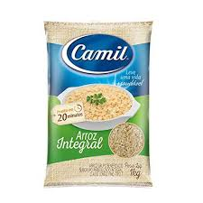
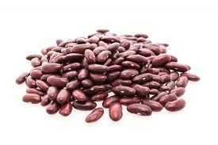

Produtos da categoria: Alimentos Não Perecíveis
Arroz
Arroz branco tipo 1, ideal para o dia a dia, fonte de energia.
Feijão
Feijão carioca selecionado, rico em proteínas e fibras.
Arroz branco tipo 1, ideal para o dia a dia, fonte de energia.
Feijão carioca selecionado, rico em proteínas e fibras.